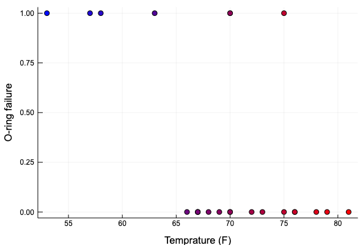
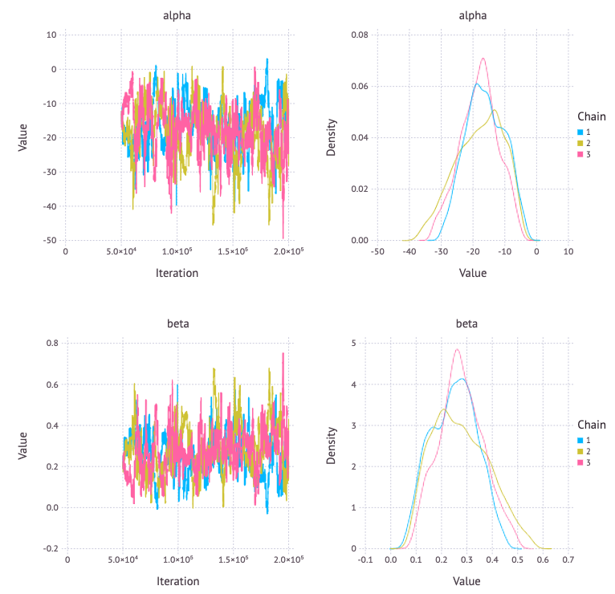
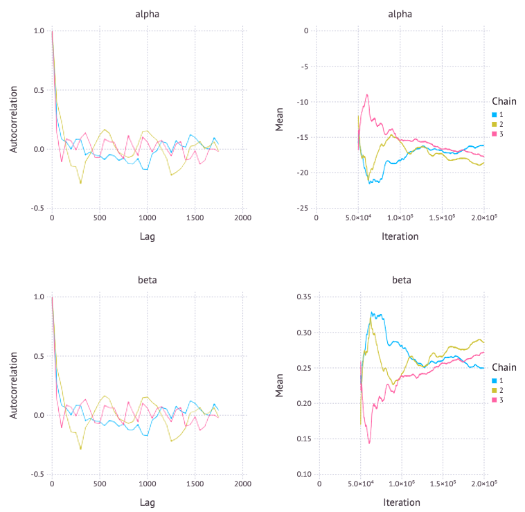
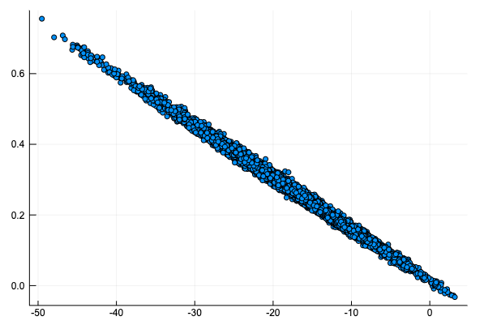
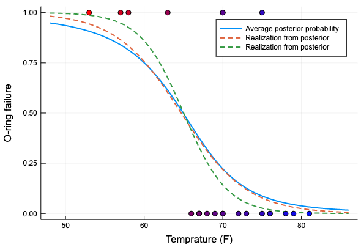
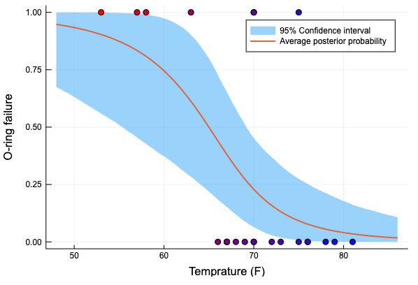

最近はGaussianRandomWalkを使った時系列ベイズモデルの推定に挑戦していたが、あまりうまくいかなかったので一旦「Pythonで体験するベイズ推論」に戻ろうと思う。
今回は「Pythonで体験するベイズ推論」の「2.2.27 例題 カンニングした学生の割合」をJuliaで実装した内容を紹介する。
まずはライブラリのインポート
using Distributed
addprocs(3)
using CSV
using DataFrames
using HTTP
using LaTeXStrings
using LinearAlgebra
@everywhere using Mamba
using Plots
データの加工はこのような形で行った。DataFrame で Int64 にパースしたい行にMissing valueやNaNがあるとき、convertではエラーになるので、
パースできない場合は missing になる tryparse を使って、その後 nothing になる行を削除して、Union{Nothing, Int64} から Int64 にもう一度変換している。
r = HTTP.request("GET", "https://git.io/vXknD");
challengers_data = CSV.read(IOBuffer(r.body))
names!(challengers_data, [:date, :temperature, :incident])
# incidentのパース
challengers_data[:incident] = tryparse.(Int64, challengers_data[:incident])
# NaNを削除
challengers_data = challengers_data[challengers_data[:incident] .!= nothing, :]
challengers_data[:incident] = convert.(Int64, challengers_data[:incident])
disallowmissing!(challengers_data)
データの図示をする。weighted_color_mean を使って、マーカーの色を青から赤にグラデーションさせた。
temperature = challengers_data[:temperature]
color_weight = (temperature .- minimum(temperature)) ./ (maximum(temperature) .- minimum(temperature))
wcolor = weighted_color_mean.(color_weight, colorant"red", colorant"blue")
scatter(challengers_data.temperature, challengers_data.incident,
markercolor = wcolor,
xlabel = "Temprature (F)", ylabel = "O-ring failure", label = "")

破損発生の有無を表す確率変数 \( D_i \) は、ベルヌーイ分布とロジスティック関数を用いて
\( \begin{aligned} D_i &\sim \text{Bernoulli}(p(t_i)), \\ p(t) &= \frac{1}{1 +\exp(\beta t + \alpha)}, \end{aligned} \)
\( t \) : 温度
とモデリングされる。今回は、あとでサンプルされた p の値を使ってデータのシミュレーションを行うために、下のように p に Logical ノードを割り当てたが、
model = Model(
observed = Stochastic(1,
p -> UnivariateDistribution[Bernoulli(x) for x in p],
false
),
p = Logical(1,
(alpha, beta, temperature)
-> @.(1.0 / (1.0 + exp(beta * temperature + alpha)))
),
alpha = Stochastic(() -> Normal(0, sqrt(1000))),
beta = Stochastic(() -> Normal(0, sqrt(1000))),
)
observedのモデリングだけであればpを経由せずに直接モデリングすることもできる。
model = Model(
observed = Stochastic(1,
(alpha, beta, temperature) ->
UnivariateDistribution[
Bernoulli(1.0 / (1.0 + exp(beta * x + alpha)))
for x in temperature],
false
),
alpha = Stochastic(() -> Normal(0, sqrt(1000))),
beta = Stochastic(() -> Normal(0, sqrt(1000))),
)
モデルパラメータ alpha, beta の事後分布は次のようになった。
data = Dict{Symbol, Any}(
:observed => challengers_data[:incident],
:temperature => challengers_data[:temperature],
)
inits = [
Dict{Symbol, Any}(
:observed => challengers_data[:incident],
:alpha => 0,
:beta => 0,
) for _ in 1:3
]
scheme = [AMWG([:alpha, :beta], 0.1)]
setsamplers!(model, scheme)
sim = mcmc(model, data, inits, 200000, burnin = 50000, thin = 50, chains = 3)
p = Mamba.plot(sim[:, [:alpha, :beta], :], legend = true)
Mamba.draw(p, nrow = 2, ncol = 2)

p = Mamba.plot(sim[:, [:alpha, :beta], :], [:autocor, :mean], legend=true)
Mamba.draw(p, nrow = 2, ncol = 2)

alpha に対して beta をプロットすると、次のような原点を通る直線上のグラフになる。\( p(t) = 0.5 \) となるのが \( t = -\alpha / \beta \) となるので、故障するかしないか半々となる温度はシミュレーションで大きく変化しないことがわかる。
alpha_samples = sim[:, [:alpha], :].value[:]
beta_samples = sim[:, [:beta], :].value[:]
scatter(alpha_samples, beta_samples, label = "", markersize = 3)

破損確率の事後期待値と、サンプルから選んでプロットする。
function logistic(x, alpha, beta)
1.0 ./ (1.0 .+ exp.(beta * x .+ alpha))
end
xs = collect((minimum(temperature) - 5):0.1:(maximum(temperature) + 5))
p_t = logistic(transpose(xs), alpha_samples, beta_samples)
Plots.plot(xs, vec(mean(p_t, dims=1)), linewidth = 2, label = "Average posterior probability")
Plots.plot!(xs, p_t[1, :], linewidth = 2, linestyle = :dash, label = "Realization from posterior")
Plots.plot!(xs, p_t[end-2, :], linewidth = 2, linestyle = :dash, label = "Realization from posterior")
scatter!(challengers_data.temperature, challengers_data.incident,
markercolor = weighted_color_mean.(color_weight, colorant"blue", colorant"red"),
xlabel = "Temprature (F)", ylabel = "O-ring failure", label = "")

破損確率の事後期待値と、95%信頼区間をプロットする
p_t_ci = mapslices(x -> quantile(x, [0.025, 0.975]), p_t, dims = 1)
Plots.plot(xs, p_t_ci[2, :], linewidth = 0,
fillrange = p_t_ci[1, :], fillalpha = 0.4,
label = "95% Confidence interval")
Plots.plot!(xs, vec(mean(p_t, dims=1)), linewidth = 2, label = "Average posterior probability")
scatter!(challengers_data.temperature, challengers_data.incident,
markercolor = weighted_color_mean.(color_weight, colorant"blue", colorant"red"),
xlabel = "Temprature (F)", ylabel = "O-ring failure", label = "")
